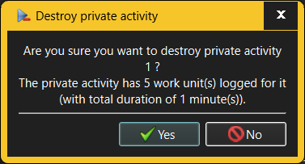

The Destroy Private Activity dialog requests confirmation when an attempt is made to destroy an existing Private Activity.

When destroying a Private Activity, any Work items and Events recorded for that Private Activity will be destroyed along with it. The Destroy Private Activity dialog will therefore show just how much an impact the Private Activity's destruction will have on the recorded work history.
Only someone with Administrator or Manage Private Activities capabilities is allowed to destroy Private Activities. However, anyone who can log into a given workspace can see their own Private Activities unless the User is configured to restrict the list of Private Activities that User can work on.
See also: -